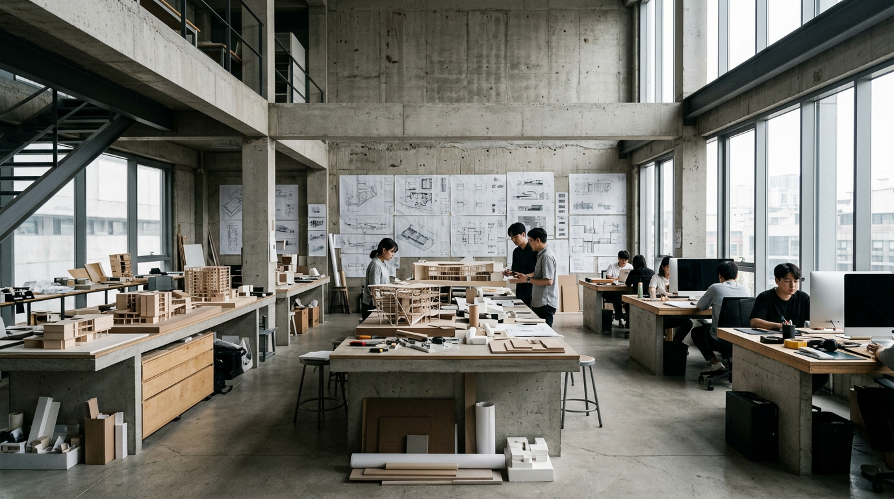
Architecture · Interior · Urban
공간에 이야기를
설계하다
콘크리트, 유리, 강철, 목재.
소재의 본질에서 시작하는 건축.
147
Projects
12
Years
9
Awards
Materiality
물성이
건축을 말한다
아키브의 설계는 소재 선택에서 시작합니다.
콘크리트의 무게, 유리의 투명함, 강철의 긴장감,
목재의 온기가 공간의 성격을 결정합니다.
Concrete
노출 콘크리트의 거친 표면은 시간이 지남에 따라 건물 고유의 텍스처를 만들어갑니다.
Glass
투명과 반사 사이, 유리는 내부와 외부의 경계를 재정의합니다.
Steel
강철의 정밀한 접합은 구조적 한계를 넘어 공간의 가능성을 확장합니다.
Wood
목재는 자연과 건축 사이의 가장 오래된 대화입니다.
Selected Works
프로젝트
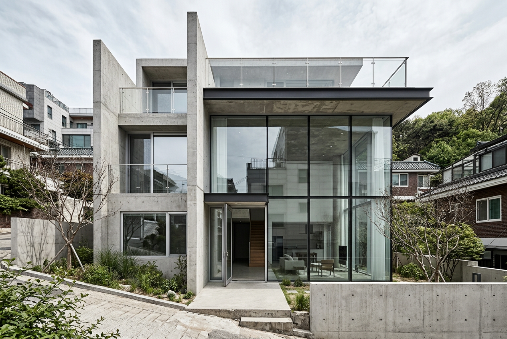
Residential · 2024
한남 레지던스
서울 용산구 · 380㎡
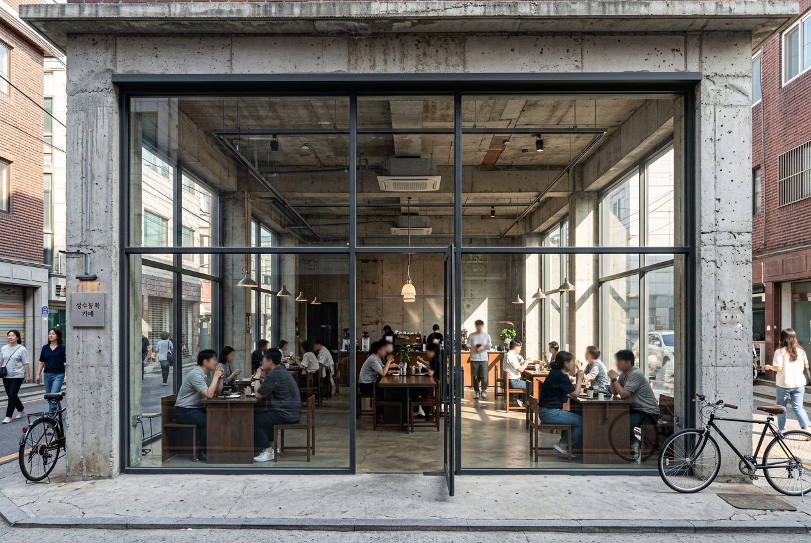
Commercial · 2024
성수 라운지
서울 성동구 · 210㎡
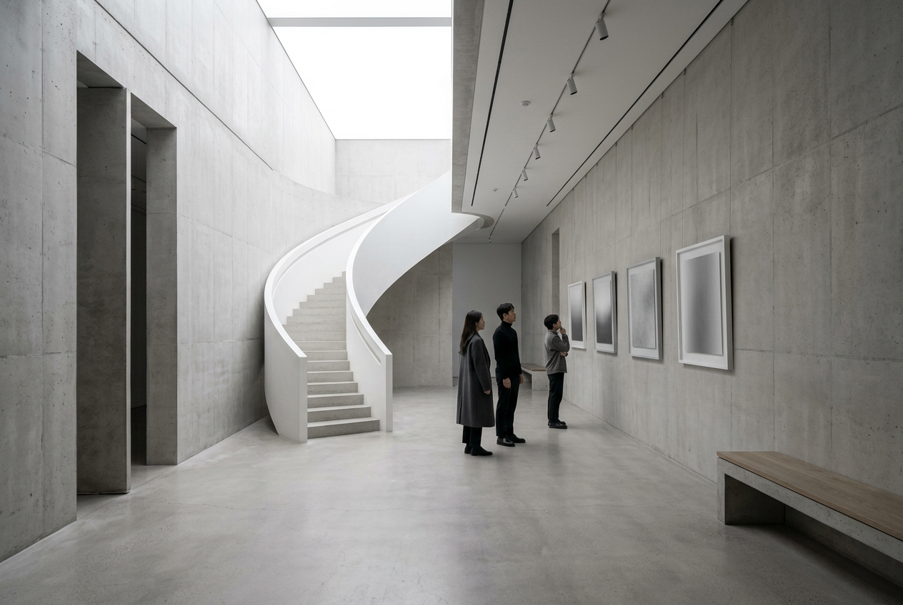
Cultural · 2023
을지 아트센터
서울 중구 · 1,200㎡
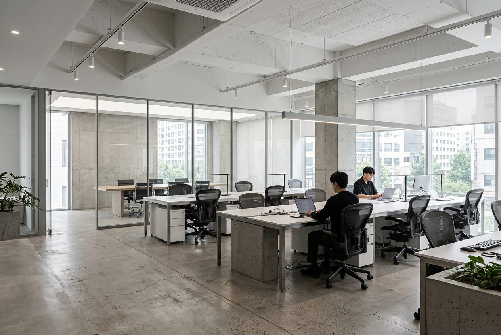
Office · 2023
논현 오피스
서울 강남구 · 560㎡
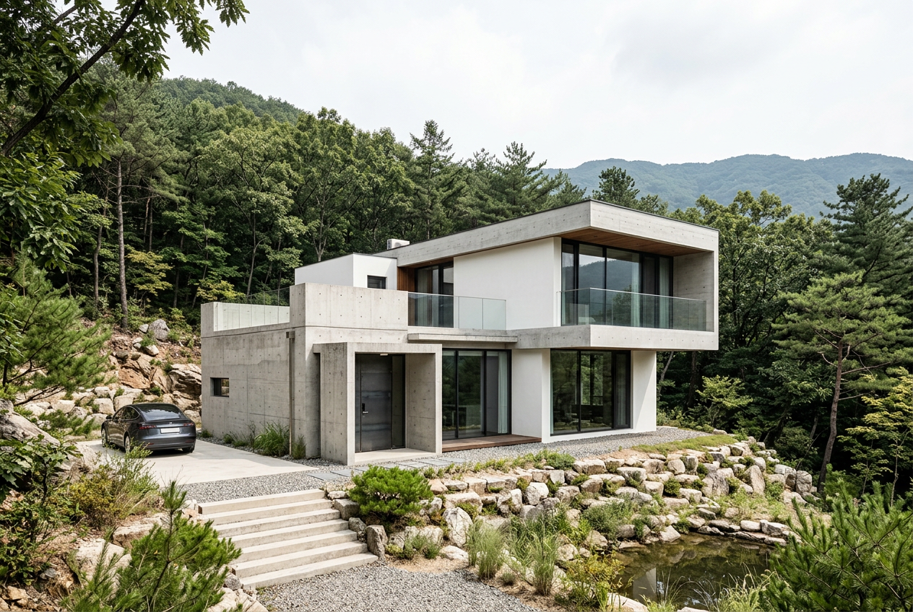
Residential · 2022
양평 하우스
경기 양평군 · 290㎡
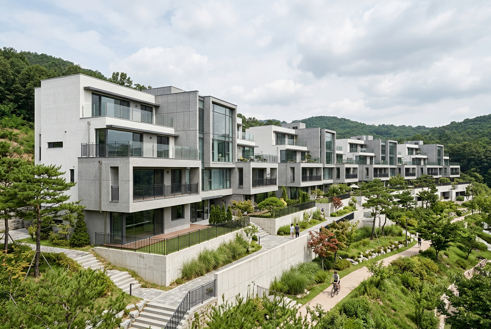
Residential · 2022
판교 타운하우스
경기 성남시 · 820㎡ (4세대)
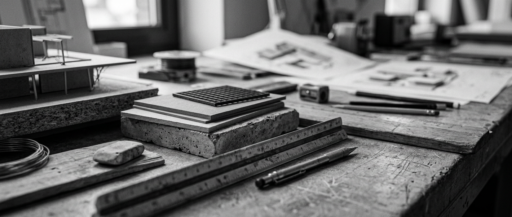
Principle
건축은 결국
빛과 소재의 대화다
Philosophy
정직한 구축
아키브는 장식이 아닌 구조에서 아름다움을 찾습니다. 소재가 스스로 말하게 하고, 빛이 공간을 완성하도록 설계합니다.
모든 프로젝트는 대지를 읽는 것에서 시작합니다. 바람의 방향, 빛의 궤적, 주변 맥락을 이해한 뒤에야 첫 선을 긋습니다.
불필요한 것을 덜어내는 과정이 곧 설계입니다. 남는 것은 오직 공간의 본질뿐입니다.
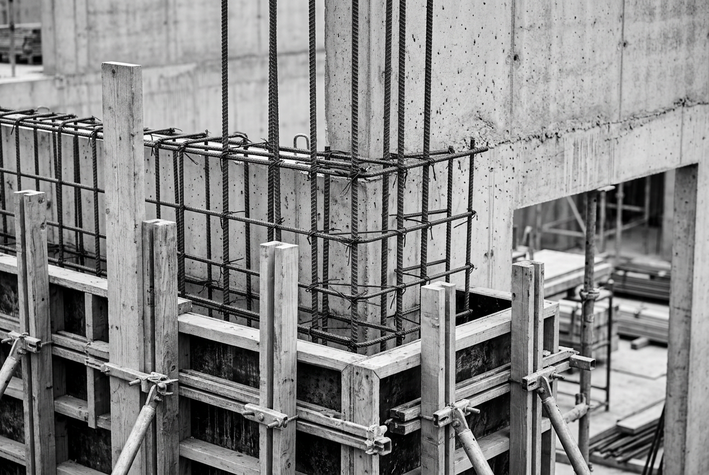
Design Process
설계 과정
01
대지 분석
현장 답사, 환경 분석,
법규 검토 및 가능성 탐색
02
컨셉 설계
공간 프로그램 수립,
매스 스터디 및 소재 제안
03
기본 설계
평면·입면·단면 확정,
구조 및 설비 협의
04
실시 설계
시공 도면 작성,
마감재 확정 및 견적
05
감리
시공 품질 관리,
설계 의도 현장 구현
Case Study
제주 지우재
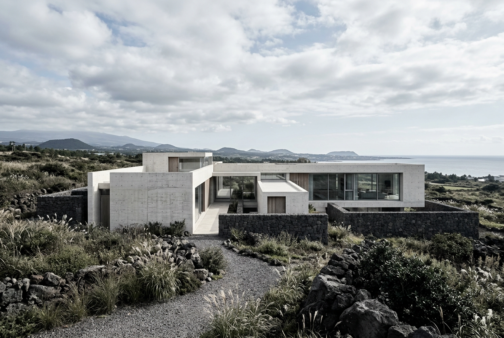
Location
제주시 한림읍
Area
420㎡
Year
2024
Scope
건축 + 인테리어
한라산 중산간 지대, 감귤밭 사이에 놓인 주말 주택입니다. 제주 현무암을 기단부에 활용하고, 상부는 노출 콘크리트와 대형 유리면으로 구성하여 화산섬의 지질학적 맥락을 건축적 언어로 번역했습니다.
남향 전면 개구부를 통해 한라산 조망을 확보하고, 중정을 중심으로 공적 공간과 사적 공간을 자연스럽게 분리했습니다. 지붕 레벨의 변화로 각 실에 서로 다른 빛의 질감을 부여했습니다.
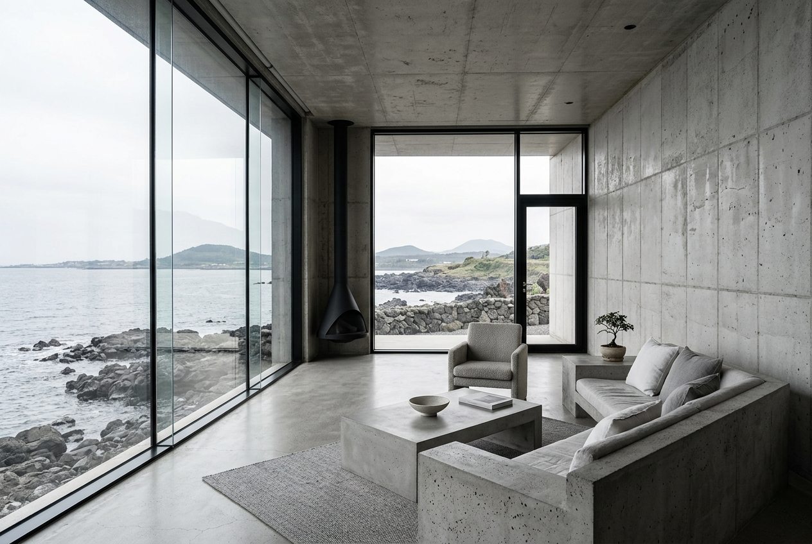
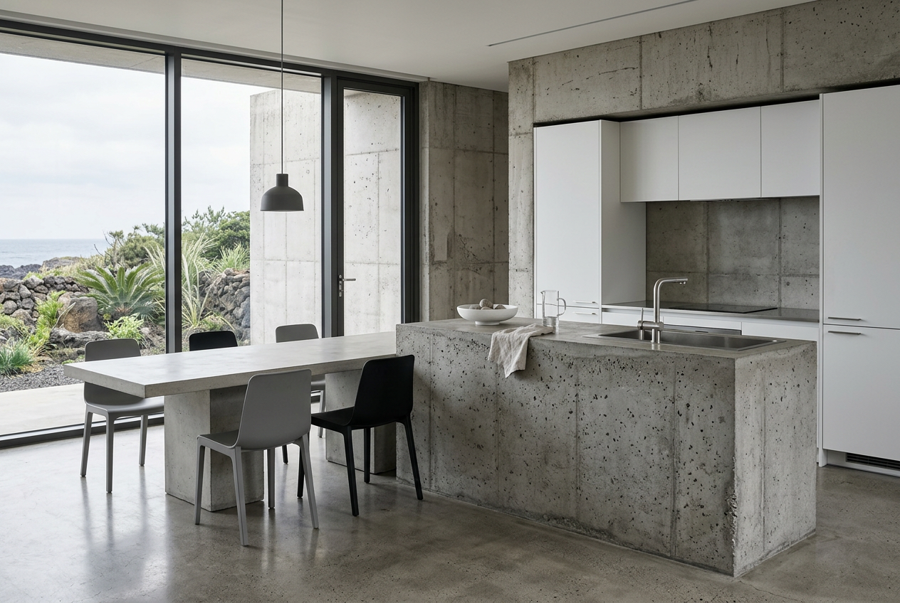
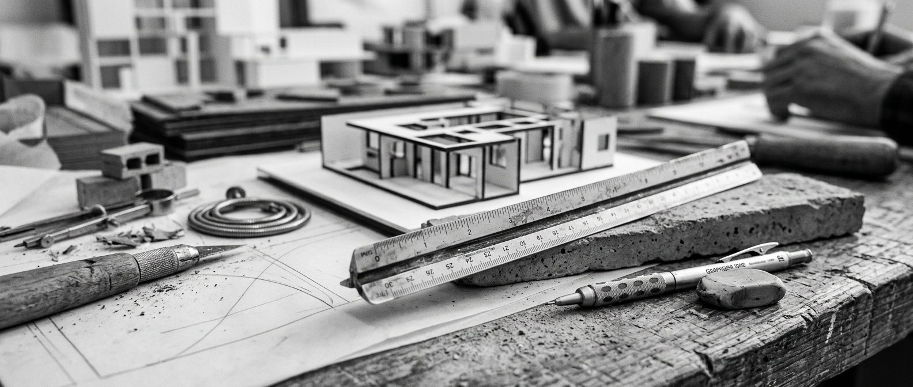
Archive
짓는다는 것은
시간을 쌓는 일이다
Recognition
수상 및 게재
2024
대한건축사협회 우수건축상
한남 레지던스 — 주거 부문 본상 수상. 도심 단독주택의 새로운 유형을 제시했다는 평가.
2024
ArchDaily
제주 지우재 — 글로벌 건축 미디어 프로젝트 피처드.
2023
서울건축문화제
을지 아트센터 — 공공건축 부문 장려상.
2023
Dezeen
양평 하우스 — House of the Day 선정.
2022
공간 SPACE
한국 건축 전문지 커버 스토리 — 젊은 건축가 특집.
People
팀
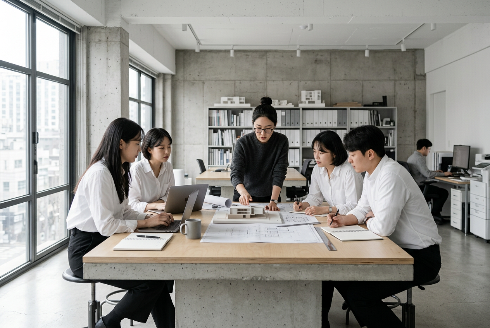
김도현
대표 건축가 · KIRA 등록
서울대 건축학과, AA School (London) 졸업. 전 MVRDV, 이로재 근무. 주거와 문화 공간을 중심으로 소재의 물성과 빛의 관계를 탐구합니다.
박소연
디자인 디렉터
한양대 건축학과, ETH Zürich (MAS) 졸업. 공간 프로그래밍과 인테리어 디자인을 총괄하며, 사용자 경험 중심의 설계를 이끕니다.
이준호
프로젝트 매니저
고려대 건축공학과 졸업. 실시 설계부터 감리까지 프로젝트 전 과정을 관리합니다. 정밀한 디테일과 현장 조율에 강점을 가집니다.
정하은
프로젝트 매니저
연세대 건축학과 졸업. 상업 공간과 리노베이션 프로젝트를 담당합니다. 기존 건물의 잠재력을 발견하는 데 탁월합니다.
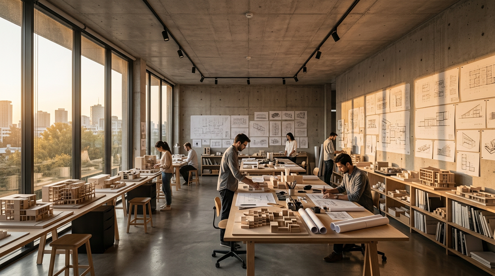
Contact
프로젝트를
시작합니다
새로운 공간을 구상하고 계신다면,
아키브와 이야기를 나누어 보세요.
서울 용산구 한남대로 42길 18, 3층
02-798-0421
contact@studioarchive.kr